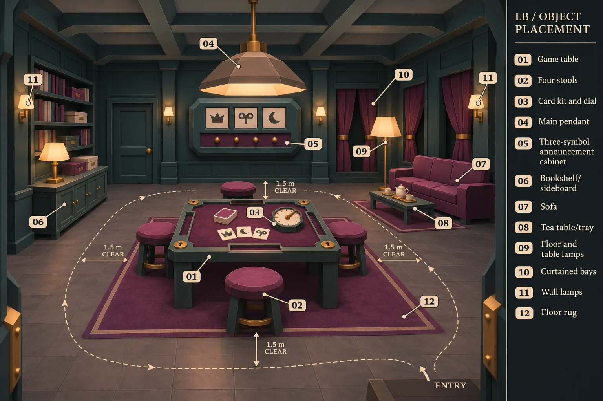
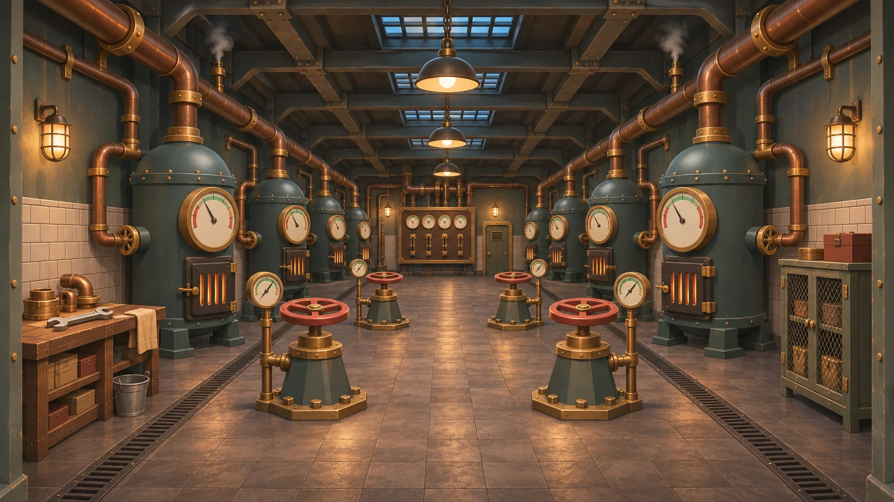
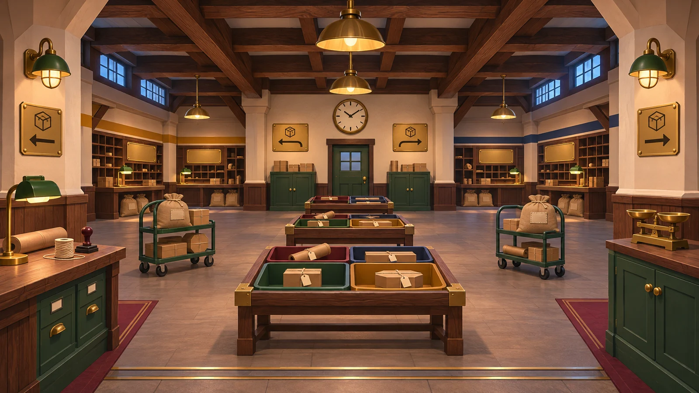

CURRENT COLLECTION
서로 다른 네 개의 세계
각 방의 현재 컨셉, 배치 계획, 실제 아트 조립을 모았습니다.
ROOM / LB
거짓말 살롱
이번 문양을 확인 → 카드를 뒤집어 내며 수량 선언 → 다음 사람이 믿거나 거짓말 지적 → 마지막 제출 공개



아트 조립 후보와 게임 속 살롱은 크기가 다릅니다. 최종 공간 통합은 남아 있습니다.
이 방의 오브젝트 보기 →ROOM / theme-clockwork
태엽 공방
흩어진 톱니를 소켓에 운반하고 네 손잡이를 맞춰 감는다


게임에 벽·바닥·천장·주요 소품을 반영했습니다. 최종 배치와 장치 동작은 계속 다듬습니다.
이 방의 오브젝트 보기 →ROOM / theme-pressure
압력실
밸브를 조절해 변동하는 압력 바늘을 안전 범위에 유지한다



게임에 밸브·보일러·배관·정비 구역을 반영했습니다. 벽·바닥·천장과 최종 조명은 작업 중입니다.
이 방의 오브젝트 보기 →ROOM / theme-parcels
분실물실
둘씩 팀을 이뤄 무게와 모양에 맞는 소포를 분류한다


28개 품목 중 22개가 준비된 부분 납품입니다. 방 전체 조립과 새 모델의 게임 반영은 아직입니다.
이 방의 오브젝트 보기 →